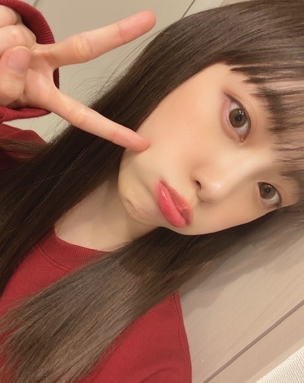
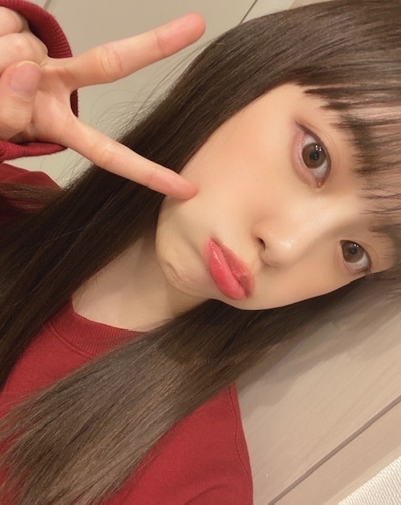

2020/0329Sunニースの夜
エドヴァルド・ムンクの
ニースの夜
という作品が素敵で、好きなので
ホーム画面にしました
ニースは2nd写真集の撮影地で行った街で
小さな街だけど可愛くて本当に素敵だったな~
南フランスは魅力に溢れていて
いつかまた必ず行きたいです
魔女の宅急便みたいな街に住みたいなぁ


朝起きてびっくり
春に雪かぁ
桜と雪の融合、雪桜が幻想的ですね
春なのに雪が降るのはちょっぴり怖いけど...
最近色々と考えるのですが
自分の身は自分で守り、周りの人のことをもちゃんと考えて気遣い合うことが大切ですね。改めて。
早くみなさんに会える日を楽しみに
私も頑張ります!
最後に、変な顔しときます!
これ見て元気出してください!



でははは
エドヴァルド・ムンクの
ニースの夜
という作品が素敵で、好きなので
ホーム画面にしました
ニースは2nd写真集の撮影地で行った街で
小さな街だけど可愛くて本当に素敵だったな~
南フランスは魅力に溢れていて
いつかまた必ず行きたいです
魔女の宅急便みたいな街に住みたいなぁ
朝起きてびっくり
春に雪かぁ
桜と雪の融合、雪桜が幻想的ですね
春なのに雪が降るのはちょっぴり怖いけど...
最近色々と考えるのですが
自分の身は自分で守り、周りの人のことをもちゃんと考えて気遣い合うことが大切ですね。改めて。
早くみなさんに会える日を楽しみに
私も頑張ります!
最後に、変な顔しときます!
これ見て元気出してください!

でははは
2020/03/29 17:12


コメント(347)
早く握手したいっ
最近は暇すぎるからみおなちゃんのブログ楽しみにしてる
写真集も楽しみにしてるよー！
握手会行きます！
大好きだよー
日本画の美人画作品としては傑作品の一つと思います。
機会があれば是非、鑑賞して下さい。
フランス俺も行ってみたいな(*^.^*)
この時季の雪は何か不思議な感覚です
周りで意識し合うのが大切だね
明日も未央奈さんにHAPPYを
お休みなさい(^-^ゞ
変顔まで可愛い(〃^ー^〃)
こっちは雨やった〜
それは変顔やけど可愛いやつですね！
もっとエグいのちょーだい！笑笑
『ニースの夜』かな？見たことない作品だから、見てみるね！
自衛は大事ですね。改めて、手の洗う癖があってよかったと思います。
カントリーな雰囲気の街って落ち着いた感じで私は好きですね。
例えば、田舎の観光地が好きです。
桜と雪の混合は見たことがないので見てみたいなー！
世の中の事案が落ち着いてからまた行きます！
またねー
未央奈ちゃんの変顔
本当に大好き⸜( ॑꒳ ॑ )⸝
2枚目保存させていただきました
雪ちょっと積もっててびっくりした!!
未央奈ちゃん風邪とか気をつけてね♡
次の更新も待ってます︎☺︎
ほんとに、会うの楽しみにしてくれる？
自分は待ち遠しくてたまりません。
いつになることやら。
顔。
かわいい。
未央奈さんの強さが大好きです。
ひでき
金曜ロードショーの魔女の宅急便見ました〜
春の雪珍しいよね......
写真可愛い！元気出ました！
自撮り可愛い
ニース行ってみたいなーー
フランスがまずめっちゃ羨ましいなーー
めっちゃ写真集が楽しみやわーー
これからもずっと応援しとるよーー
未央奈ちゃんに初めて会える日を楽しみに頑張ります
気遣える事は大切なことだよね。！
早く普通の生活に戻るといいなあ
未央奈ちゃんのお顔が可愛すぎて元気出まくりです夜も眠れません （いい意味で）
またブログ更新楽しみにしてます！！
今日は部活のコンサートだったのです。
でもコロナとかあって体育館でやることになっちゃいました
でも頑張れてよかった〜！踊りも踊った！
黒髪ポニテの頃のみおなちゃんもボブのみおなちゃんも今の茶色のポニテもぜ〜んぶ好き！
たくさんの可愛らしい写真をありがとう。ほっこり
東京も大変そう。お気をつけて
ブログ更新、ありがとうございます♪
過去2回ほど、コメントするタイミングを逃してしまいました。
ごめんなさい…
まとめてコメントしますね‼︎
ムンクに、『ニースの夜』という作品があるんですね♪
ムンクの作品といえば、『叫び』しか知りませんでした。
ムンクって悩みばかり抱えている暗い人かと思っていたけど(笑)、こんな穏やかな雰囲気の作品も書いているんですね…‼︎
自分はニースには行ったことがないけど、リゾート地の夜は大好きです♪
日が落ちて暑さが和らいで、心地良い風が吹いてたりして。
静かなのに、独特の開放感もあって。
とっても癒されますよね♪
そんな雰囲気の中、現地の食べ物を食べなから、お酒を飲んだり(笑)。
もう最高の気分です…‼︎
ニース、いつか行ってみたいですね♪
もちろん、今はとてもそんな状況ではないですが…
今やパンデミックの中心は、中国からヨーロッパに移ったと言われています。
フランスでも感染が拡大していて、ニースでも夜間の外出禁止令が出ているようです。
心配ですよね…
1st写真集『君らしさ』の撮影地であるアメリカは、感染者数ではイタリアや中国を抜いて、世界一になってしまいました。
日本でもここに来て感染者数が増えて、予断を許さない状況になってきています。
フランスやスペインの18日前の感染者数は、1,800人前後。
今の日本とほぼ同じです。
決して油断できる状況ではない。
あっという間に状況は変わってしまう。
日本の戦いは、これからが本番ですね。
どんな状況になろうとも、個人個人ができることは限られている。
引き続き、不要不急の外出をしない、感染しやすい密室空間等は避けて、うがい・手洗いをこまめにする。
よく寝て、バランスの取れた食事をして、規則正しい生活をする。
結局、自分たちが感染しないことが、人の命を救いますからね♪負の連鎖を断ち切るために、自分たちができることをやり切るしかないですね‼︎
そして、思いやりの気持ちも大事。
いろんな意見がありますが、ただいがみ合っても何も生まれない。
冷静さと優しさを持って、議論したいですね♪
未央奈の変顔の写真(笑)。
こんな状況下でも、笑いと癒しをくれて、ありがとうございます♪
何よりも、その気持ちがとても嬉しかったです…‼︎
あと、2つ前のブログでも思ったんだけど…
編み込みカチューシャの写真、とっても可愛い‼︎
この髪型、大好きです♪
未央奈にめっちゃよく似合う‼︎
チークも桜色で、いつもより春っぽい感じ。
華やかな雰囲気で、とってもいいですね‼︎
自分も、また未央奈と会える日を楽しみにしてます。
一緒に頑張りましょう…‼︎
ではでは、また。
明日も未央奈にとっていい1日になりますように♪
P.S 2期生7周年、おめでとうございます‼︎
2期生の活躍の機会がさらに広がりますように♪
今日は本当にびっくりしたよね！！春に雪はびっくりしたね！雪桜凄く幻想的だよね(*^^*)凄く綺麗だったよ！確かに未央奈ちゃんの言うとおり自分の身は自分で守り、周りの人のことをもちゃんと考えて気遣い合うことが大切だよね。早く未央奈ちゃんに会いたいよ(>_<)自分も頑張るね！全然変な顔じゃないよ！凄く可愛いくて元気が出たよ！ありがとうね♪本当に未央奈ちゃんのブログとか未央奈ちゃんの笑顔にはいつも元気とかパワーを貰ってるよ！未央奈ちゃんの素敵な笑顔大好きだよ！本当にありがとう♪また、ブログの更新楽しみにしてるね！未央奈ちゃん大好きだよ！でははは！堀 未央奈神推し秀喜より！(≧∇≦)
かわいいですね
ブログの１枚目の写真めっちゃ可愛い
エドヴァルド・ムンクといえば『叫び』が超有名ですが、北欧の景色を始め、風景画にもすてきな作品がたくさんありますね。写真集撮影の思い出の地ニースの絵を待ち受けに。いいですね。
春の雪にびっくり。今日は寒かったですね。雪桜はおつですけれど、風邪引かないよう今夜は暖かくしておやすみなさい。
ではまたコメントします。
さらばだ、また会おう！（気球に乗って去りぬ～）
未央奈ちゃんの変顔最高です笑
いつも何でも全力な未央奈ちゃんを尊敬しています(｀･ω･´)ゞ
自分に嘘をつかず偽らず正直に生きる姿を見て、感動してるし、心を動かされました！
未央奈ちゃんは自分の目指すべき人だと思っています！
これからも応援します！頑張ってください！自分も頑張ります！！
未央奈ちゃんの変顔最高です笑
いつも何でも全力な未央奈ちゃんを尊敬しています(｀･ω･´)ゞ
自分に嘘をつかず偽らず正直に生きる姿を見て、感動してるし、心を動かされました！
未央奈ちゃんは自分の目指すべき人だと思っています！
これからも応援します！頑張ってください！自分も頑張ります！！
写真集楽しみだな！
今回の写真集はどんな作品になってるか楽しみです堀ちゃんのインタビューとか入ってると思うのでとっても楽しみに待ってます！！
今日の朝起きたら雪が降ってて自分はとってもびっくりした！
この時期に降るとは思わずびっくりしたり外出たらで寒かったな…
コロナで握手会が延期になって辛いです…
堀ちゃんと喋りたい事いっぱいあるのに話せなくて本当に辛いのにブログを頻繁に出してくれて本当に嬉しいですしファンの事気遣って本当に堀ちゃんを推してて良かったとしみじみ思います！
堀ちゃんもコロナ気をつけてね！
あと花粉も舞ってるから辛いと思うけど体調には気をつけてね！
ブログ更新してくれありがとう！
また更新するのを待ってるね
堀ちゃんのそういう気遣いがすごい好きです！
めっちゃ元気でました！！
可愛い
いつもこまめに更新してくれるのに、
コメントするのが遅くなっちゃって、
俺もファンの端くれとして、
もっと応援の声を届けていきたいと決意！
昨日は二期生の記念日、おめでとう！
この前注文した二期生グッズ、
届くのがとても楽しみ。
今日のブログの１枚目の写真、
俺的にベストかも！？(mionamail)
みんなで乗りきろう
ただただ可愛すぎるだけだぞ
ではは
堀ちゃんに会えるのを楽しみに、手洗いうがい忘れずに日々過ごします！
いつも更新ありがとうございます
春に雪
まあまあ積もって寒かったですね
思いやりの精神
今一番必要とされていることかも
心を穏やかに保ちましょ
未央奈さん面白い 笑
こういう写真もいいですね(^_^)
ありがとね
驚きますよね。
4月に雪が降ったこともありますが、
本日だって。
桜との融合！
しまった！！
貴重な機会を！！
寒さに負けた～～（笑）
大人への近道
かもしれませんね。
ブログ更新ありがとうございます！
変カワ顔癒されました✨
素敵。みおちゃんは写真集でこういう景色を見てきたんだもんね。いいなぁ。
海外行きたい。
写真集楽しみにしてるよ〜！！！
大人っぽい写真だね！魅力的。
おデコもかわいいよん♪
そして、、お姫様〜☺️
雪降ったんだねー！
雪桜。ほんと。幻想的だね。
まだ寒いもんね、、
うん。ほんとそう思うよ。
考えて行動できるみおちゃんはすごいよ。
そういう面も好きなんよねぇ。(^-^)
755みたよ。みおちゃんの言葉ってすごく心に響く。自慢の推しメンです。みおちゃんに出会えてほんとよかった。大好きだよ。
自分を信じること。
仲間を信じること。
人から信じられること。
今年のこっちの目標です。
素晴らしい人で溢れた世界であったらなぁ。って思うことも多々あるけど、いろんな考え方の人がいる世界だからこそ、おもしろいというのが最近の考え方です。
人生を楽しめてますか？
小学生の頃書いた未来の自分へのメッセージの1つ。
まぁ、楽しめているといえば楽しめてるかな。
って今のこっちなら答えるんだけど、
その答えじゃダメ！だと思うんよね。
もっと真っ直ぐで輝いた瞳で友達と走り回ってた自分でありたい。
だから。早く握手したい！会いたい！✨
って違うか。笑
話が脱線しちゃったから無理やり戻ってきた。笑
変顔ありがとー！！！かわいい。☺︎
みおちゃんはこっちにとって大切な存在です。
みおちゃんも元気出してください。
無理しすぎずに。ウイルスに気をつけて。
おちこんだりもしたけれどわたしは元気です
良い言葉よね。
今を生きよう。明日を生きよう。
えいえいおー！
元気でました♪
全然、変な顔じゃないよう。可愛いよー。
変な顔ってのは、こんな顔だよ。せーの、
ブー。ってお見せできないのが残念です。
ナハハハ。では。また、更新してねん。
そうだ、昼起きたら雪でしたね、うん。
仕事で来てたんですが、朝方は結構降ってましたけど、そんな積もることはなくてほっとしました。
天気って不思議だよね。
でも考えてみると天候含む地球上の自然って、生命にとって絶妙なバランスで、奇跡的とも言える循環で成り立たっていると思う。
人間もその中の一部として生かされている存在なので、いたることにおいて結局は因果はつながっているんだろうな～。
天気と言えば、オテンキのりさんとのレコメン、堀ちゃんの出演は最終回でしたね。
お疲れ様でした。
毎週楽しみに聴かせてもらっていました。
ラジオでの堀ちゃんの屈託のないトークや、溢れ出んばかりの素晴らしい感性がとっても素敵でした。
僕の中では、水曜日の夜は堀ちゃんと、まいちゅんさんだったので寂しいです。
堀ちゃんの笑い声を聴くと元気になるし、ほっこりするんだよね。笑
楽しい時間をありがとう。
フランスいいよね～。
堀ちゃんはやっぱりジブリとか西洋アンティークみたいな世界観が似合よ。
よく物語りに出てくる中世ヨーロッパのお姫様っていう感じかな。笑
またフランス行けるといいね！
たくさんブログ更新してくれるから、いつも楽しみに待ってます！！飛鳥ちゃんとの写真がほしいです…
体調には、本当に！本当に！気をつけてください！
大好き！
コメントする